Université des Mascareignes
Licence Informatique Appliquée - L2
Étudiant : Anli Omar
Encadrant : Dr. Toofanee Mohammud Shaad Ally
Année académique : 2025 - 2026
Date de soutenance : 27 Avril 2026
Rapport de Projet Tutoré - Développement Web & Systèmes d’Information
Je tiens à remercier mon encadrant pédagogique pour son accompagnement et ses conseils tout au long de ce projet. Je remercie également l’ensemble des enseignants pour la qualité de la formation dispensée. Enfin, je remercie mes camarades pour l’entraide et le soutien durant la réalisation du projet.
La gestion des déchets constitue aujourd’hui un enjeu environnemental majeur, particulièrement dans les territoires insulaires comme Maurice. L’augmentation de la population, l’urbanisation rapide ainsi que l’évolution des modes de consommation ont entraîné une production de déchets de plus en plus importante, mettant sous pression les infrastructures de collecte et de traitement existantes.
Dans ce contexte, les dépôts sauvages de déchets représentent une problématique récurrente. Ces dépôts apparaissent dans des zones non autorisées telles que les terrains vagues, les bords de route ou encore certains espaces publics. Ils contribuent à la dégradation de l’environnement, à la pollution visuelle, ainsi qu’à des risques sanitaires pour la population.
Par ailleurs, malgré les efforts des autorités et des services de gestion des déchets, le processus de signalement reste encore peu centralisé et parfois inefficace. Les citoyens ne disposent pas toujours d’un outil simple et rapide permettant de signaler un problème avec précision, notamment en intégrant des informations géographiques et visuelles.
Face à ces constats, une problématique centrale se dégage :
Comment faciliter le signalement des dépôts de déchets et améliorer la valorisation des déchets recyclables à travers une solution numérique centralisée ?
Actuellement, les systèmes existants ne permettent pas une gestion fluide et unifiée des signalements. Les informations sont souvent dispersées, ce qui limite la rapidité d’intervention et la coordination entre les différents acteurs concernés.
De plus, une grande quantité d’objets encore réutilisables est jetée, faute de plateforme permettant leur mise en relation entre particuliers. Il existe donc un manque de solution numérique combinant à la fois le signalement environnemental et la valorisation des ressources recyclables.
L’objectif principal de ce projet est de concevoir et développer une plateforme web permettant de répondre aux problématiques identifiées.
Afin de répondre à cette problématique, ce rapport est structuré en plusieurs parties. Dans un premier temps, une étude bibliographique sera présentée afin de contextualiser le projet et de s’appuyer sur des sources fiables concernant la gestion des déchets. Ensuite, une analyse des besoins et une méthodologie de travail seront détaillées. La partie suivante sera consacrée à la conception et à l’implémentation de la solution. Enfin, une analyse des résultats, des limites du projet ainsi que des perspectives d’amélioration sera présentée.
Cette section présente les principales sources et études relatives à la gestion des déchets, afin de contextualiser le projet et de justifier les choix réalisés lors de sa conception.
Le United Nations Development Programme (UNDP) souligne que la gestion des déchets constitue un défi majeur à Maurice. Selon leurs travaux, le pays fait face à une augmentation constante de la production de déchets, atteignant environ 650 000 tonnes en 2023, avec une croissance annuelle d’environ 2,5 %.
Le site d’enfouissement principal de Mare Chicose approche de sa capacité maximale, ce qui rend nécessaire la mise en place de nouvelles stratégies de gestion durable des déchets.
L’UNDP met également en avant l’importance du tri des déchets à la source afin de réduire la quantité de déchets envoyés en décharge, avec un objectif pouvant atteindre 70 % de réduction grâce à des politiques adaptées.
Ces éléments montrent que la gestion des déchets est un enjeu national nécessitant des solutions innovantes, notamment numériques, pour améliorer la collecte d’informations et la participation des citoyens.
Toujours selon l’UNDP, la pollution plastique représente une part importante du problème environnemental. À Maurice, environ 70 000 tonnes de déchets plastiques sont envoyées chaque année en décharge, alors que seulement 3 000 tonnes sont recyclées.
Une partie de ces déchets finit directement dans l’environnement, affectant les écosystèmes terrestres et marins, ce qui renforce la nécessité de mettre en place des outils facilitant le signalement rapide de ces déchets.
L’UNDP indique également que Maurice génère environ 17 000 tonnes de déchets dangereux par an, nécessitant des systèmes de gestion spécifiques pour limiter leur impact sur la santé et l’environnement.
Cela démontre que la problématique des déchets ne concerne pas uniquement les déchets domestiques, mais également des catégories plus complexes nécessitant un suivi précis.
À Maurice, la gestion et la valorisation des déchets ne reposent pas uniquement sur les institutions publiques, mais également sur plusieurs acteurs privés et associatifs qui contribuent au recyclage et à la sensibilisation.
Ces acteurs montrent qu’il existe déjà un écosystème de gestion des déchets à Maurice, mais celui-ci reste fragmenté et peu centralisé, ce qui limite l’efficacité globale du système.
L’ensemble de ces études met en évidence plusieurs problématiques majeures : augmentation des déchets, saturation des infrastructures, faible taux de recyclage et manque de suivi des dépôts sauvages.
Dans ce contexte, le développement d’une plateforme numérique de signalement apparaît comme une solution pertinente. Elle permet de faciliter la remontée d’informations depuis les citoyens, d’améliorer la localisation des dépôts de déchets et de centraliser les données pour une meilleure gestion.
De plus, l’intégration d’une marketplace de recyclage s’inscrit dans la logique d’économie circulaire encouragée par les organismes internationaux, en favorisant la réutilisation des ressources plutôt que leur mise en décharge.
Ainsi, les travaux de l’UNDP et les initiatives locales à Maurice confirment la pertinence du projet et justifient le choix d’une solution web combinant signalement et valorisation des déchets dans un écosystème déjà existant mais fragmenté.
L’analyse des besoins permet de définir les fonctionnalités attendues du système ainsi que les contraintes auxquelles il doit répondre. Elle est essentielle pour orienter la conception et garantir que la solution développée répond réellement au problème identifié.
Le système repose sur deux types d’acteurs principaux qui interagissent avec la plateforme.
Le choix des technologies a été réalisé en fonction des besoins du projet, de la rapidité de développement et de la simplicité de mise en œuvre.
D’autres technologies comme PHP auraient pu être utilisées pour le backend. Cependant, aucune stack technique spécifique n’ayant été imposée pour ce projet, le choix s’est porté sur Django.
Django a été privilégié pour sa simplicité d’intégration, son écosystème complet et sa capacité à gérer rapidement des applications web structurées sans nécessiter une architecture complexe.
De plus, le choix de Django a été fortement motivé par la contrainte de temps du projet. En effet, le développement a été réalisé sur une durée relativement courte, d’environ un mois. Django, grâce à ses fonctionnalités intégrées (ORM, système d’authentification, interface d’administration), a permis d’accélérer significativement le développement et de produire une application fonctionnelle dans ce délai limité.
De plus, l’utilisation de HTMX permet d’éviter l’utilisation d’un framework frontend lourd (comme React), ce qui simplifie considérablement le développement tout en conservant une bonne interactivité.
Le développement du projet a été réalisé en suivant une approche inspirée de la méthode Agile.
Le travail a été organisé en plusieurs phases courtes (sprints), chacune dédiée à l’implémentation d’un ensemble de fonctionnalités spécifiques, telles que l’authentification, le système de signalement ou la marketplace.
Cette approche a permis de tester progressivement les fonctionnalités, de corriger les erreurs au fur et à mesure et d’améliorer le système de manière itérative.
L’utilisation d’une méthode Agile a ainsi facilité la gestion du projet et permis une meilleure adaptation aux contraintes et aux évolutions du développement.
Cette section présente l’architecture du système, la conception de la base de données ainsi que l’implémentation des principales fonctionnalités de la plateforme.
L’application repose sur l’architecture MVT (Modèle – Vue – Templates) implémentée par Django. Cette architecture permet de séparer clairement la logique métier, l’interface utilisateur et la gestion des données.
Le projet est structuré en plusieurs applications Django indépendantes afin de respecter le principe de séparation des responsabilités et d’améliorer la maintenabilité, la lisibilité ainsi que l’évolutivité du code.
Chaque application gère un domaine fonctionnel précis du système :
Cette séparation en applications permet de limiter les dépendances entre modules, de faciliter les tests unitaires, et de rendre le projet plus scalable pour de futures évolutions.
Cette organisation modulaire permet de travailler de manière plus structurée et de faciliter les évolutions futures.
La base de données repose sur un modèle relationnel, permettant d’assurer une structuration cohérente des données et de garantir l’intégrité des relations entre les différentes entités du système.
Le choix d’un modèle relationnel est justifié par la nature fortement structurée des données manipulées (utilisateurs, signalements, listings et offres), ainsi que par la nécessité de maintenir des relations claires entre ces entités.
Les relations entre ces entités sont assurées à l’aide de clés étrangères, permettant de garantir la cohérence des données et de structurer les interactions entre utilisateurs et contenus de la plateforme.
La phase de modélisation a joué un rôle central dans la conception du système. Elle a permis de structurer les données et les interactions avant le développement, afin de limiter les incohérences et faciliter l’implémentation sous Django.
Trois niveaux de modélisation ont été utilisés :
Cette approche progressive permet de passer d’une vision fonctionnelle du système à une implémentation technique cohérente.
Le diagramme de cas d’utilisation permet d’identifier les interactions entre les acteurs et le système, notamment les actions possibles pour les utilisateurs et l’administrateur.
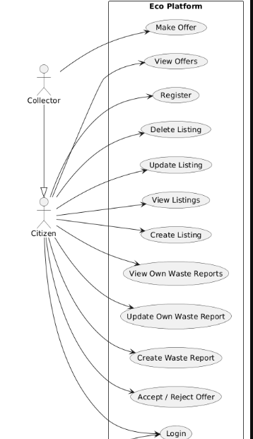
Le diagramme de classes représente la structure objet du système et les relations entre les différentes entités. Il permet de définir clairement les modèles utilisés dans Django.
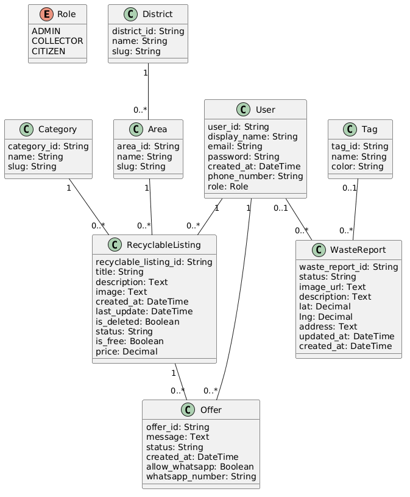
Le modèle conceptuel de données (MCD) permet de représenter les entités et leurs relations de manière abstraite, indépendamment de toute implémentation technique.
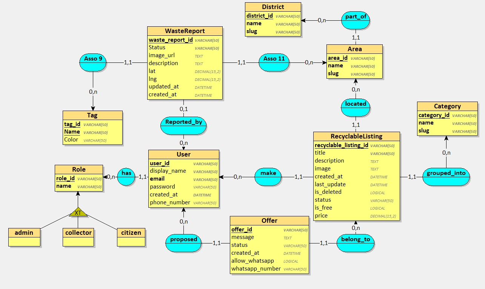
Le modèle logique de données (MLD) constitue une transformation du MCD en une structure adaptée à une base de données relationnelle, incluant les clés primaires et étrangères.
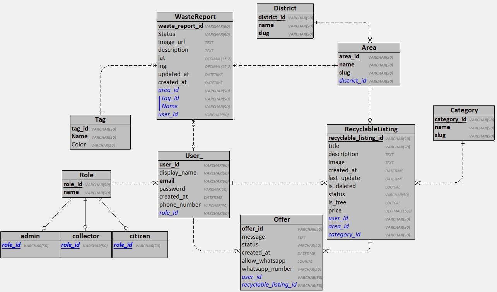
Ces différents diagrammes ont permis de structurer le projet en amont et de limiter les erreurs lors du développement.
Les fonctionnalités du système ont été développées de manière progressive selon les besoins identifiés lors de l’analyse. Chaque module a été conçu pour répondre à une problématique précise tout en restant cohérent avec l’architecture globale du projet.
Le module de signalement constitue le cœur du système. Il permet à tout utilisateur de déclarer un dépôt de déchets en fournissant une image et une localisation GPS.
Ce choix de conception vise à réduire les barrières d’accès afin de favoriser un maximum de contributions citoyennes, notamment dans un contexte environnemental où la rapidité de signalement est essentielle.
L’intégration de la géolocalisation permet d’associer chaque signalement à une position précise sur la carte, facilitant ainsi le traitement par les autorités ou les administrateurs.
Une particularité importante est que cette fonctionnalité est accessible sans authentification, afin de réduire les barrières à l’utilisation et encourager un maximum de signalements.
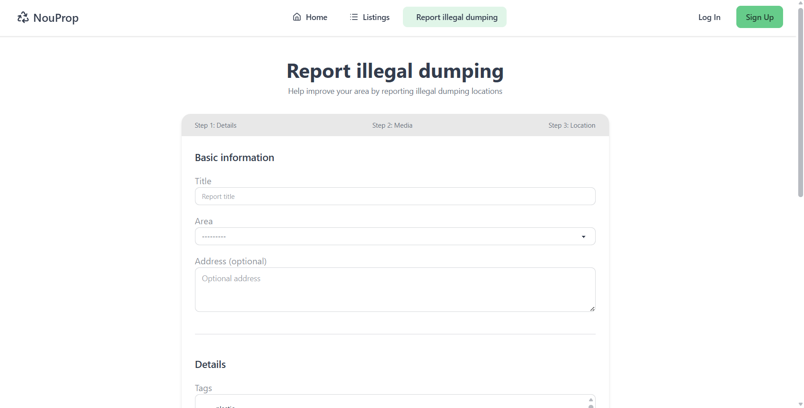
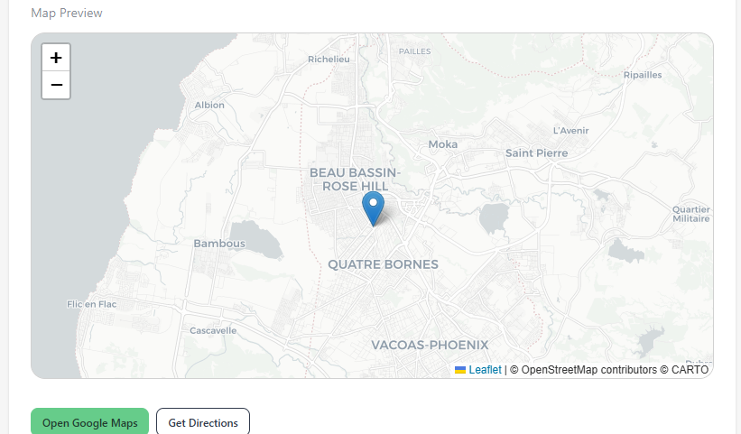
La marketplace de recyclage a été intégrée afin de favoriser la réutilisation des objets et déchets encore exploitables. Elle permet aux utilisateurs de publier des annonces et d’interagir via un système d’offres.
Cette fonctionnalité s’inscrit dans une logique d’économie circulaire, visant à réduire la quantité de déchets envoyés en décharge en favorisant leur réutilisation entre particuliers.
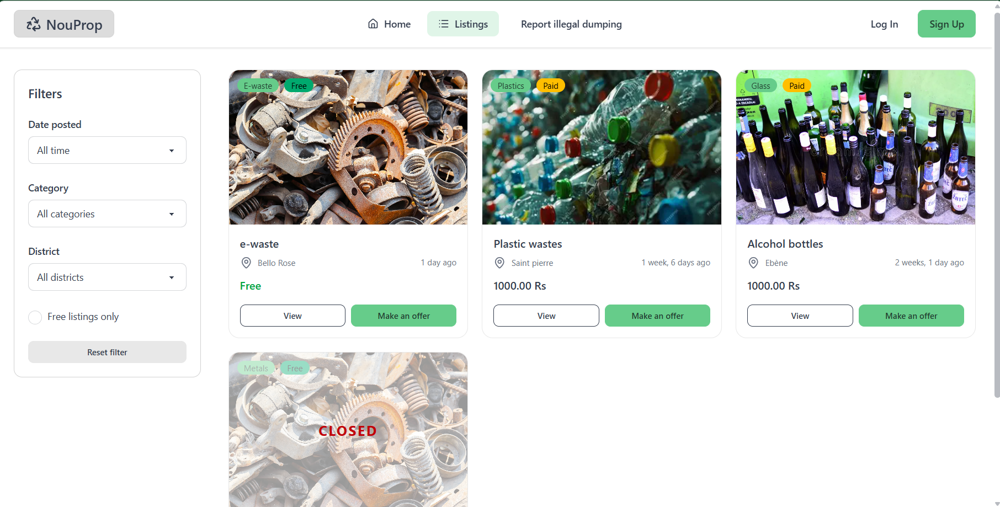
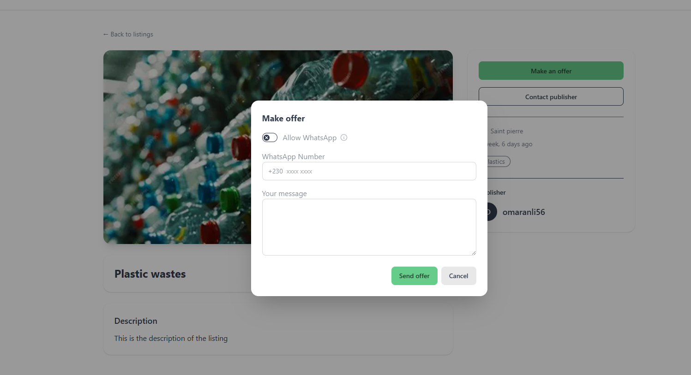
Le tableau de bord utilisateur centralise l’ensemble des activités liées au compte, notamment les signalements, les listings et les offres.
Il permet une meilleure visibilité des actions effectuées sur la plateforme et améliore l’expérience utilisateur en regroupant les informations importantes dans une interface unique.
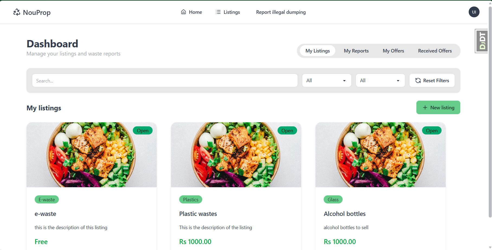
La plateforme intègre un système de gestion de compte permettant à chaque utilisateur de contrôler ses données personnelles.
Cette fonctionnalité garantit à l’utilisateur un contrôle total sur ses données, conformément aux bonnes pratiques en matière de protection des données et aux principes de confidentialité.
La suppression d’un compte entraîne également la suppression ou l’anonymisation des données associées lorsque cela est applicable.
L’interface d’administration permet de gérer les signalements et de modifier leur statut. Elle offre une vue globale sur les données du système.
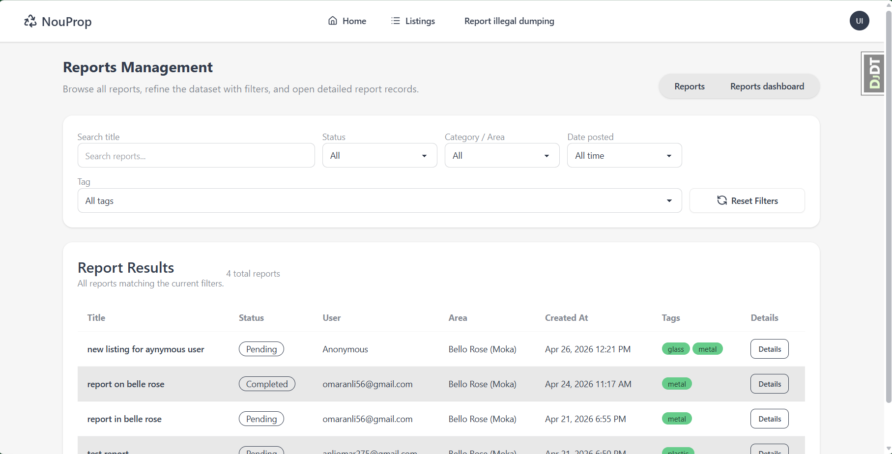
Dans le cadre de la conception de la plateforme, plusieurs aspects juridiques et liés à la sécurité ont été pris en compte afin d’assurer la conformité et la protection des utilisateurs.
Une politique de confidentialité a été mise en place afin d’informer les utilisateurs sur la collecte, l’utilisation et la conservation de leurs données personnelles. Les données sensibles sont limitées au strict nécessaire pour le bon fonctionnement de la plateforme.
Les conditions d’utilisation définissent les règles d’accès et d’utilisation du service. Elles encadrent notamment les comportements interdits, la responsabilité des utilisateurs ainsi que les limites d’utilisation de la plateforme.
Les mentions légales permettent d’identifier le responsable du service ainsi que le cadre légal dans lequel la plateforme est utilisée.
Des mesures de sécurité ont été mises en place afin de protéger les données et les accès au système. L’objectif principal est de garantir la confidentialité, l’intégrité et la disponibilité des informations manipulées par la plateforme.
Ces éléments permettent de garantir un niveau de sécurité adapté à une application web manipulant des données utilisateurs. Ils s’appuient sur les mécanismes natifs de Django ainsi que sur des bonnes pratiques de développement afin de réduire les risques liés aux attaques courantes (injection, accès non autorisé, falsification de requêtes).
Afin d’assurer de bonnes performances globales de la plateforme, plusieurs optimisations ont été mises en place au niveau du backend Django et de la gestion des ressources.
Ces optimisations permettent d’assurer une application stable, réactive et capable de supporter une utilisation réelle dans un contexte de production. L’utilisation combinée de Django ORM, d’outils d’analyse comme Debug Toolbar et d’un stockage externe pour les médias contribue à une architecture plus performante et évolutive.
L’expérience utilisateur (UX/UI) a été un point central dans la conception de la plateforme afin de garantir une utilisation simple, rapide et intuitive, même pour des utilisateurs non techniques.
L’objectif principal était de réduire la complexité des interactions et de rendre les actions principales accessibles en un minimum de clics, notamment pour le signalement de déchets et la publication de listings.
L’interface a été développée avec Tailwind CSS afin de garantir un design moderne, cohérent et facilement maintenable. L’approche utility-first a permis de concevoir rapidement une interface propre et structurée.
Le design est entièrement responsive (mobile-first), assurant une adaptation automatique sur différents types d’écrans (smartphones, tablettes et ordinateurs). Cette approche est essentielle pour un système destiné à être utilisé sur le terrain.
L’utilisation de HTMX a permis d’améliorer fortement l’interactivité de l’application sans recourir à un framework JavaScript lourd. Cela a rendu l’expérience utilisateur plus fluide et réactive.
Une attention particulière a été portée à la simplicité des formulaires afin de limiter les erreurs et améliorer la rapidité de saisie.
Le système fournit un retour immédiat aux actions de l’utilisateur afin d’améliorer la compréhension et la confiance dans la plateforme.
Grâce à l’utilisation combinée de Django et HTMX, l’application offre une expérience fluide avec une forte réactivité côté utilisateur, réduisant la sensation de latence lors des interactions.
L’ensemble de ces choix contribue à une interface moderne, intuitive et adaptée à une utilisation réelle sur le terrain, tout en améliorant l’efficacité globale du système.
La planification du projet a été réalisée afin d’organiser les différentes phases de développement et de respecter les contraintes de temps. Le projet ayant été réalisé sur une durée relativement courte d’environ un mois et demi, une organisation rigoureuse a été nécessaire.
Le développement du projet a été structuré en plusieurs phases principales, permettant de progresser de manière logique depuis l’analyse jusqu’aux tests finaux.
Afin de visualiser l’organisation du projet dans le temps, un diagramme de Gantt a été réalisé. Il permet de représenter les différentes phases ainsi que leur durée.
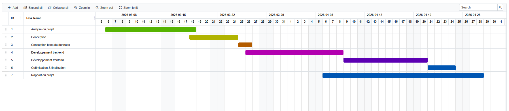
La répartition du temps a été adaptée à la durée totale du projet (environ un mois). Une part importante du temps a été consacrée au développement des fonctionnalités principales.
Cette répartition a permis de prioriser le développement tout en conservant du temps pour la conception et la validation du système.
Afin de garantir la fiabilité du système, deux types de tests ont été réalisés : des tests fonctionnels manuels et des tests unitaires au niveau du backend Django.
Des tests fonctionnels ont été réalisés afin de vérifier que chaque fonctionnalité principale du système fonctionne correctement.
Ces tests fonctionnels ont été réalisés manuellement afin de vérifier le comportement global de l’application du point de vue utilisateur.
Les tests ont permis de valider que les fonctionnalités principales répondent aux besoins définis dans le cahier des charges.
Des tests unitaires ont été implémentés afin de vérifier le bon fonctionnement des composants critiques du système, notamment les modèles et certaines logiques métier.
Ces tests unitaires permettent de garantir que les principales entités du système fonctionnent correctement indépendamment de l’interface utilisateur.
Afin de simuler des cas réels d’utilisation, plusieurs scénarios ont été testés.
Les captures d’écran ci-dessous illustrent le fonctionnement de l’application.
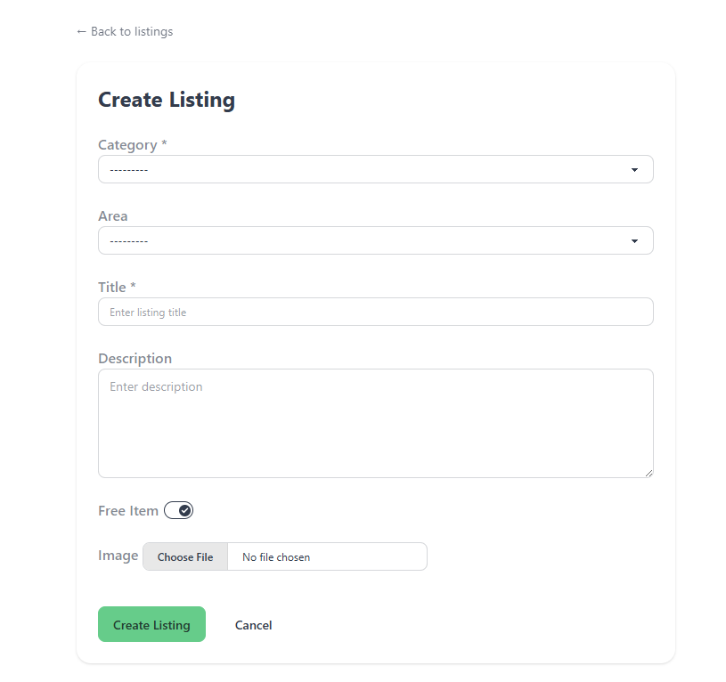
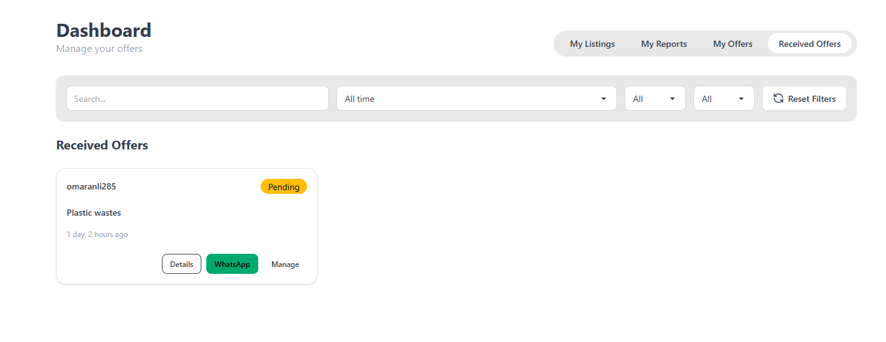
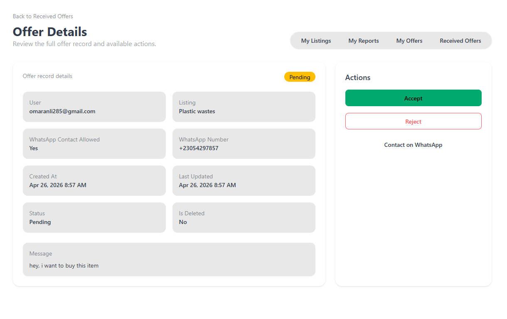
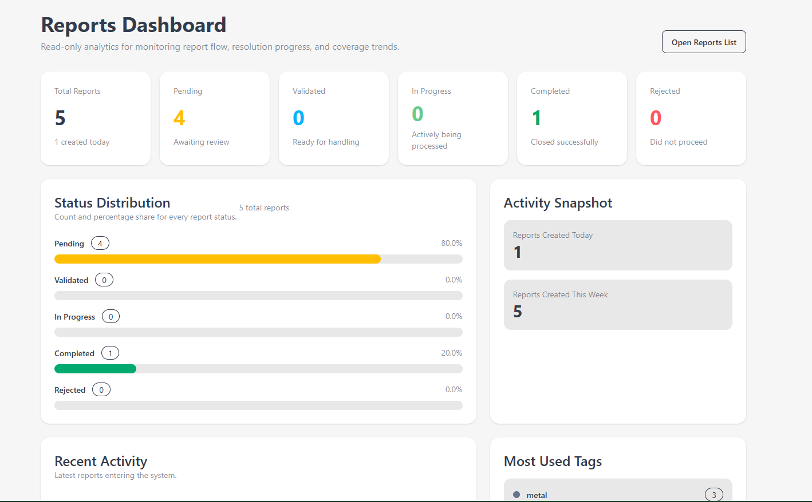
Les résultats obtenus sont globalement conformes aux objectifs définis en début de projet.
Certaines fonctionnalités avancées, comme les notifications ou l’optimisation de la carte, n’ont pas pu être finalisées en raison des contraintes de temps, mais restent envisagées comme améliorations futures.
Bien que le système développé réponde globalement aux objectifs fixés, certaines limites techniques et fonctionnelles peuvent être identifiées. Ces limites ouvrent également des perspectives d’amélioration pour des versions futures.
Malgré ces difficultés, des solutions techniques ont été mises en place progressivement, permettant d’aboutir à un système fonctionnel et cohérent avec les objectifs initiaux du projet.
La réalisation de ce projet m’a permis de développer et de consolider plusieurs compétences techniques et méthodologiques dans le domaine du développement web et de la conception de systèmes d’information.
Ce projet m’a permis de gagner en autonomie dans la conception et le développement d’une application web complète, tout en renforçant ma capacité à structurer un système complexe de manière professionnelle.
Ce projet ouvre plusieurs perspectives d’évolution, tant sur le plan technique que sur son potentiel d’application réelle. Il pourrait être transformé en une solution complète destinée à des acteurs publics ou privés impliqués dans la gestion des déchets.
Dans un contexte de transition écologique et de digitalisation des services publics, une plateforme de signalement centralisée peut jouer un rôle important dans l’amélioration de la gestion environnementale.
Ainsi, ce projet ne se limite pas à un exercice académique, mais peut constituer une base solide pour une solution réelle ayant un impact environnemental et sociétal.
Il représente également une expérience formatrice complète dans la conception et le développement d’applications web modernes.
Ce projet a permis de concevoir et développer une plateforme web complète dédiée au signalement de dépôts de déchets sauvages et à la valorisation de déchets recyclables via une marketplace.
L’objectif principal était de proposer une solution numérique simple et accessible permettant de centraliser les signalements et de faciliter la réutilisation des objets recyclables entre utilisateurs.
Sur le plan technique, ce projet a permis de consolider plusieurs compétences, notamment l’intégration de cartes interactives avec Leaflet, la gestion des données géographiques (GPS), ainsi que la conception et le développement d’une application web avec Django.
Une difficulté importante a été la gestion de la carte et des coordonnées GPS, ainsi que la contrainte de temps limitée pour réaliser l’ensemble du projet. Malgré cela, l’application a pu être développée avec succès et fonctionne de manière stable.
Sur le plan environnemental, ce projet s’inscrit dans une démarche de sensibilisation à la gestion des déchets et à la réduction des dépôts sauvages, un problème réel observé à Maurice.
En termes de perspectives, plusieurs améliorations peuvent être envisagées, notamment l’ajout de notifications en temps réel, une optimisation de la carte interactive avec clustering, ainsi que le développement d’une application mobile afin de faciliter les signalements sur le terrain.
Enfin, ce projet représente une expérience complète mêlant développement web, conception de système et réflexion sur un problème environnemental concret.